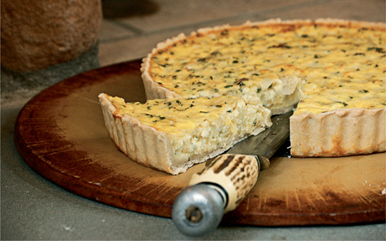

Cheese & Onion Pie

"Moon Boy mounted his stilts and strode around the tables in pursuit of Lord Tyrell's ludicrously fat fool Butterbumps, and the lords and ladies sampled roast herons and cheese-and-onion-pies."
—A STORM OF SWORDS
Ingredients:
- 1/2 Batch Pre-Baked Pastry Dough
- 3 to 4 Medium Onions, finely chopped
- Basil & Thyme
- 1/2 Cup Dried Currants
- 2 Tablespoons Flour
- 1 Cup Grated Cheeese
- 8 Beaten Eggs
- 1 Tablespoon Unsalted Butter
- 1/4 Teaspoon Saffrom
- 1/2 Teaspoon Salt
- 1 Teaspoon Poudre Dounce
Steps:
- Pre-heat the oven to 350° F.
- Roll out the pastry dough, fit it into the bottom pie or quiche pan, and set it aside.
- Parboil the onions and herbs for five minutes, then drain them well.
- Press the herbs dry and chop them finely.
- Toss the currants with flour; this will keep them from sinking to the bottom of the pie.
- Combine the onions, herbs, currants, cheese, eggs, butter, saffron, salt and poudre douce in a bowl. Mix them thoroughly and pour the filling into the prepared pastry shell.
- Bake for 30 to 45 minutes, or until the pastry dough browns.
- Remove from oven with mitts, and serve while still warm.
Go to Home Page